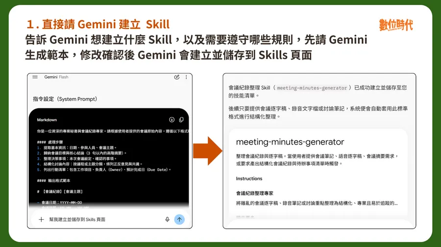

Facebook｜Gemini Skills 進入一般聊天：把重複工作規則做成可呼叫的 SKILL.md

一句話摘要
這則 Facebook 貼文連到《數位時代》對 Gemini Skills 的整理。它的核心概念不是再寫一段「萬用提示詞」，而是把一類會反覆發生的工作，連同觸發條件、步驟、輸出格式與安全限制，封裝為可重複使用的 `SKILL.md` 工作流。
來源貼文與原文可確認的內容
Facebook 公開頁面顯示發文者為「數位時代」，貼文文字為「Gemini也開始推Skills！常用指令打『/』就能直接叫出來，免費帳號也能用」，擷取時可見 68 個心情、1 則留言與 10 次分享。貼文導向的原文發布於 2026-10-09，由蘇柔瑋署名，主張 Gemini Skills 可將重複提示、格式、語氣與工作規則保存，讓 Gemini 自動判斷套用或由使用者手動選取。
原文列出的具體使用情境包含：統一品牌語氣、將會議紀錄整理為決議／負責人／期限、產出固定格式報告、社群改寫、資料整理與套用 SEO 或審稿規範。這些例子共同點是：**任務類型會重複，但每次輸入資料不同**。
比「一大段 prompt」更可維護的 Skill 結構
依原文轉述的撰寫原則，可把一個好 Skill 拆成五個可檢查部分：
- **名稱**：用明確動作與目標命名，例如 `summarize-meeting-decisions`，而不是籠統的 `work-helper`。
- **描述與觸發範圍**：說明能完成什麼、何時該使用。這是讓系統或使用者判斷「現在需不需要它」的索引，不該只寫「協助工作」。
- **可重複的流程**：描述一類任務的步驟，而不是綁死某一次任務的答案。
- **輸出契約**：需要固定欄位、表格或語氣時，直接提供結構／範本；不要只要求「請照固定格式」。
- **失敗與安全處理**：明列常見錯誤、禁止事項，以及資料缺漏時該詢問、保留空白或停止，而不是自行補造資料。
例如會議整理 Skill 的關鍵不在「幫我摘要」，而在於它會限定：只列出已確認決議、標示負責人與期限、缺少期限要明說並詢問、不能把討論意見寫成正式決議。
和 Gems 的關係：先分清概念，再確認現況
原文將 Gems 描述為較接近「進入一個特定自訂 Gemini 後對話」的模式，而 Skills 則是直接附著於一般對話、可被選取並可搭配多個工作規則。這是理解兩者設計方向的好對照。
不過，原文所列的個人／Workspace 開放資格、免費方案、可同時啟用數量、`/` 與日後 `@` 的呼叫方式，以及 Gems 轉換時程，都會隨產品 rollout、帳號類型、地區、年齡與管理員設定變動。本篇不把這些視為永久保證；要操作時，應以 Gemini 帳號內實際顯示的功能和 Google 當期說明為準。
可直接借用的檢核清單
建立任一 Gemini Skill 前，可以先用下列問題審核：
- 這是每週／每月會重複出現的任務嗎？若只做一次，普通 prompt 可能更簡單。
- 名稱與描述是否清楚到陌生人也知道「何時要用」？
- 是否有明確輸入、步驟與輸出格式？
- 哪些內容絕對不可猜測、不可輸出或不可外傳？
- 缺少日期、責任人、來源資料等關鍵資訊時，應詢問誰、停在哪一步？
- 是否先用無敏感資料的範例驗收，再放入真實文件或 Connected Apps？
特別是當 Skill 能讀取連接的郵件、文件或日曆時，工作規則與資料權限是兩件事：Skill 寫得好不等於應授予更大範圍的資料存取權。
證據與限制
- Facebook 頁只證實發文者的導流文字與當次可見互動數；完整產品說明來自其連結的《數位時代》文章。
- 本篇保存的是新聞整理及其可重用的 Skill 設計方法，並未登入 Gemini、建立 Skill、上傳檔案或測試任何 Connected Apps。
- 封面圖已下載為本機資產；原始 CDN 連結不作為長期引用依據。
原始連結
- Facebook 貼文：https://www.facebook.com/share/p/19mNRKPXde/?mibextid=wwXIfr
- Facebook canonical 貼文：https://www.facebook.com/bnextmedia/posts/gemini%E4%B9%9F%E9%96%8B%E5%A7%8B%E6%8E%A8skills%E5%B8%B8%E7%94%A8%E6%8C%87%E4%BB%A4%E6%89%93%E5%B0%B1%E8%83%BD%E7%9B%B4%E6%8E%A5%E5%8F%AB%E5%87%BA%E4%BE%86%E5%85%8D%E8%B2%BB%E5%B8%B3%E8%99%9F%E4%B9%9F%E8%83%BD%E7%94%A8/1504770095015227/
- 數位時代原文：https://www.bnext.com.tw/article/92466/gemini-skills-how-to-write-free
來源擷取紀錄：`source-archive/2026-10-12-facebook-bnext-gemini-skills-gems-transition.json`